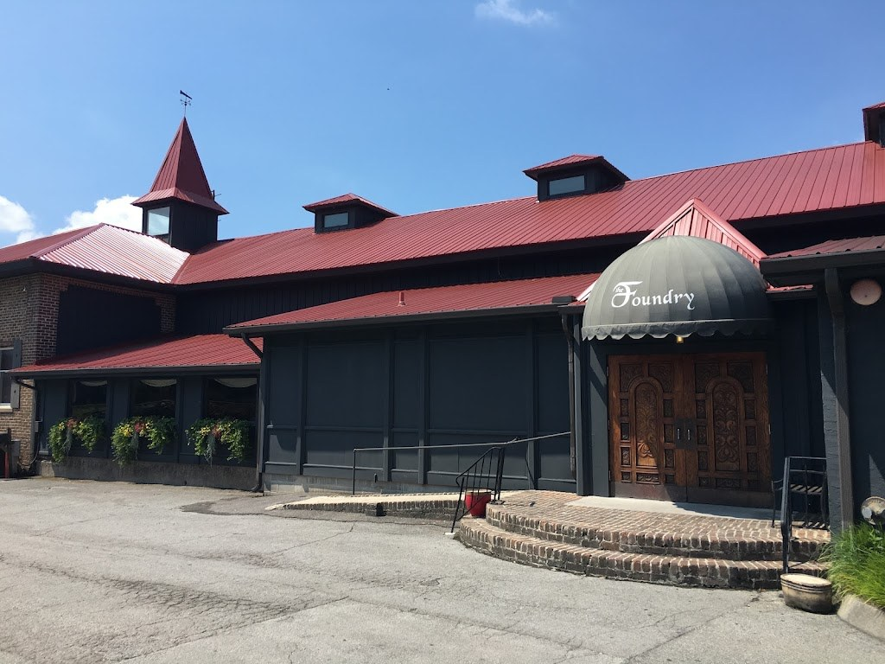
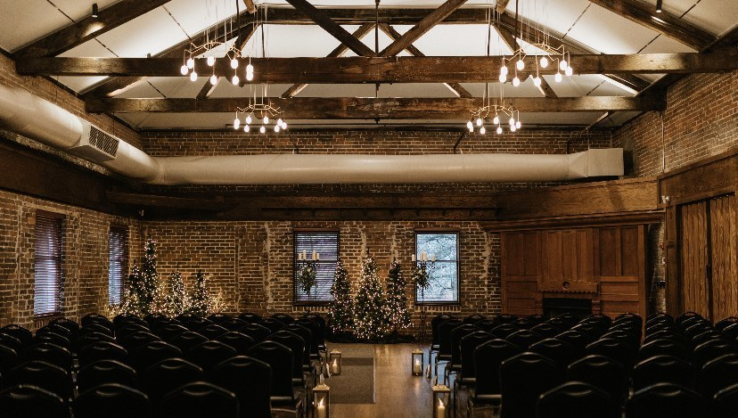
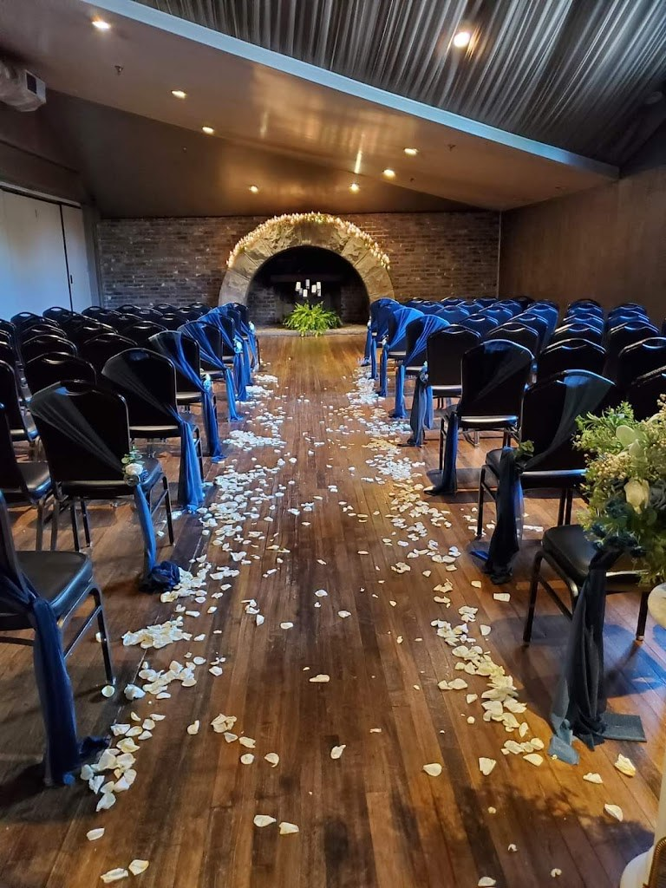

Visit Foundry On The Fair Site
A historic 1865 foundry building at Worlds Fair Park, with event space for up to 600 guests, onsite catering, and wedding planning and decor.
Address: 747 Worlds Fair Park Dr, Knoxville, TN 37902
Hours: Monday through Friday, 9:00 AM to 5:00 PM.
Phone: (865) 546-8656
Gallery



All three photos are real photos from the business's Google Maps listing. They show the red metal roof and tower entrance with a Foundry awning over carved wooden doors, the empty ceremony hall with exposed brick walls and a timber roof, and a ceremony aisle with blue-sashed chairs and a stone fireplace arch.
Contact
Foundry On The Fair Site serves Knoxville, TN. Questions? Call (865) 546-8656.